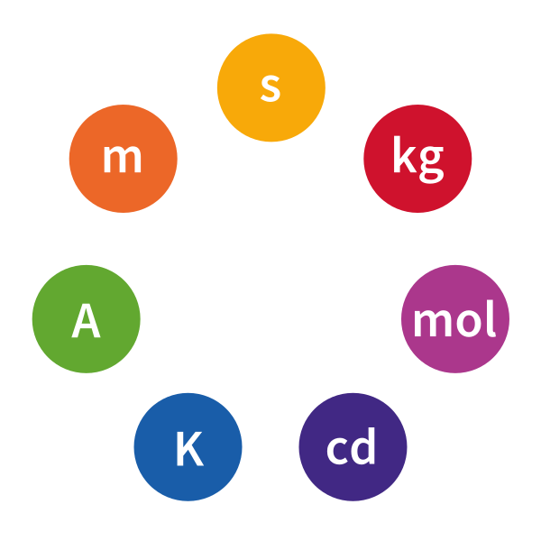
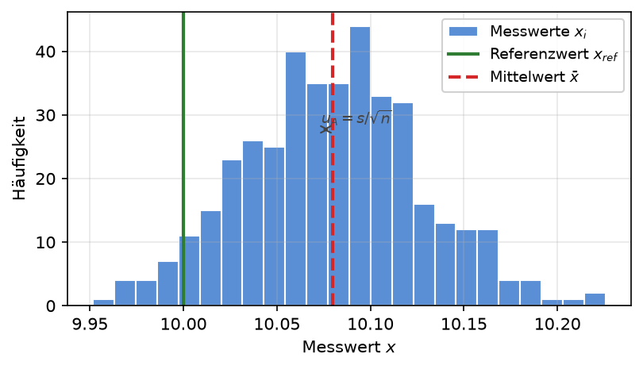

1 Einführung in die Messtechnik
1.1 Physikalische Größen und SI-Einheiten
- Eine physikalische Größe ist ein Produkt aus Zahlenwert und Einheit:
\[x = \{x\}\cdot[x]\]
- Sieben SI-Basiseinheiten (m, kg, s, A, K, mol, cd); alle weiteren Einheiten sind daraus abgeleitet (z. B. \(1\,\mathrm{V} = 1\,\mathrm{kg\,m^2\,s^{-3}\,A^{-1}}\)).
- Häufige Vorsätze: \(k=10^{3}\), \(m=10^{-3}\), \(\mu=10^{-6}\), \(n=10^{-9}\), \(p=10^{-12}\).


1.2 Was ist Messen?
- Messen = quantitativer Vergleich der Messgröße mit einer Maßverkörperung (Normal, Referenz) unter festgelegten Bedingungen.
- Messkette: Messgröße → Sensor/Aufnehmer → Signalaufbereitung → Anzeige/Auswertung.
- Jede Messung liefert einen Schätzwert der Messgröße — wie gut dieser ist, beschreibt die Messunsicherheit (siehe Kapitel 1.3).
1.3 Messunsicherheit nach GUM
Die moderne Behandlung von Messungen folgt dem Guide to the Expression of Uncertainty in Measurement (GUM, JCGM 100:2008 [1]; deutsche Einführung: JCGM 104 [2]). Kerngedanke: Es gibt nicht den „wahren Wert plus Fehler”, sondern einen Schätzwert und eine Messunsicherheit, die die Streuung der plausiblen Werte der Messgröße kennzeichnet.
- Die Messung wird als Modell beschrieben — Messgröße \(Y\) als Funktion der Eingangsgrößen \(X_i\) mit ihren besten Schätzwerten \(x_i\):
\[Y = f(X_1, X_2, \ldots, X_N)\]
- Jede Eingangsgröße trägt eine Unsicherheitskomponente \(u(x_i)\) in das Unsicherheitsbudget ein — gleich welcher Art ihr physikalischer Einfluss ist.
- Systematische Einflüsse (Kalibrierabweichung, Rückwirkung des Messgeräts, Einflussgrößen wie Temperatur) werden nicht „weggemessen”, sondern bestimmt und korrigiert; ihr verbleibender Anteil geht ins Budget.
- Grobe Fehler (Fehlbedienung, Überlastung) sind keine Unsicherheit — sie erzeugen ungültige Messwerte: erkennen (Plausibilität), verwerfen, wiederholen.
1.3.1 Typ-A-Bewertung: statistisch
Aus \(n\) wiederholten Messungen unter gleichen Bedingungen:
\[\bar{x} = \frac{1}{n}\sum_{i=1}^{n} x_i, \qquad s = \sqrt{\frac{1}{n-1}\sum_{i=1}^{n} (x_i - \bar{x})^2}\]
Standardunsicherheit des Mittelwerts:
\[u_A = u(\bar{x}) = \frac{s}{\sqrt{n}}\]

1.3.2 Typ-B-Bewertung: nicht statistisch
Aus Vorwissen: Kalibrierzertifikate, Datenblätter, Erfahrungen. Liegt eine Angabe als Intervall \(\pm a\) vor (gleichförmige Verteilung):
\[u_B = \frac{a}{\sqrt{3}}\]
Beispiel: Genauigkeitsangabe eines DMM \(\pm(a\%\ \mathrm{v.\,M.} + n\ \mathrm{digits})\) → Grenzen \(a\) bestimmen, als Typ-B-Komponente ins Budget.
1.3.3 Kombinierte und erweiterte Unsicherheit
Unsicherheitsfortpflanzung (Modell linearisiert, Empfindlichkeitskoeffizienten \(c_i = \partial f/\partial x_i\)):
\[u_c(y) = \sqrt{\sum_{i=1}^{N} c_i^2\, u^2(x_i)}\]
Erweiterte Unsicherheit mit Überdeckungsfaktor \(k = 2\) (ca. 95 %):
\[U = k\cdot u_c, \qquad \text{Ergebnis: } Y = (y \pm U)\ \text{bei } k=2\]
1.4 Anzeige: analog und digital
| Analoganzeige | Digitalanzeige | |
|---|---|---|
| Ablesen | Schätzung der Zwischenwerte | eindeutige Ziffern |
| Dynamik | Trends/Schwingungen gut erkennbar | Trägheit bei schnellen Änderungen |
| Auflösung | durch Skalenabstand begrenzt | durch Stellenzahl/digits begrenzt |


Platzhalter — Digitalanzeige: Nahaufnahme einer 3½-stelligen Digitalanzeige (z. B. „1999 counts” mit führender ½-Stelle), um Auflösung in digits und den Begriff Zähldisplay zu zeigen.
1.5 Auflösung und Genauigkeit
- Auflösung: kleinste unterscheidbare Wertänderung. Digital: \(Q = \text{Endwert}/\text{counts}\) (3½-stellig: 1999 counts → Auflösung \(\tfrac{1}{1999}\) des Messbereichs-Endwerts).
- Genauigkeit (analog): Genauigkeitsklasse \(p\) — zulässiger Anzeigefehler bezogen auf den Messbereichs-Endwert:
\[\Delta x_{max} = \frac{p}{100}\cdot \text{Endwert}\]
- Genauigkeit (digital): Herstellerangabe
\[\Delta x = \pm\left(a\%\ \text{vom Messwert} + n\ \text{digits}\right)\]
- Genauigkeit ist immer kleiner als Auflösung: eine feine Anzeige kann trotzdem falsch messen.